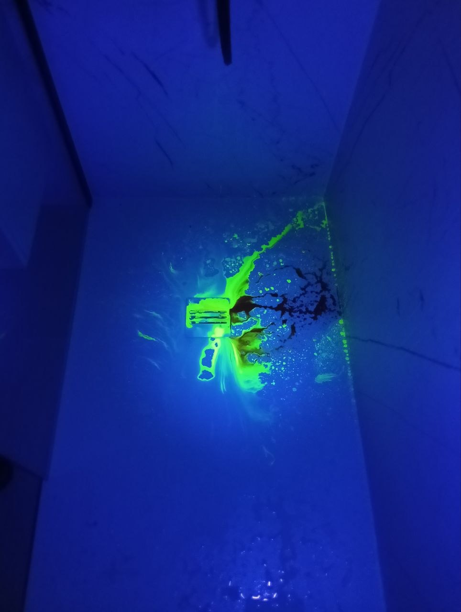
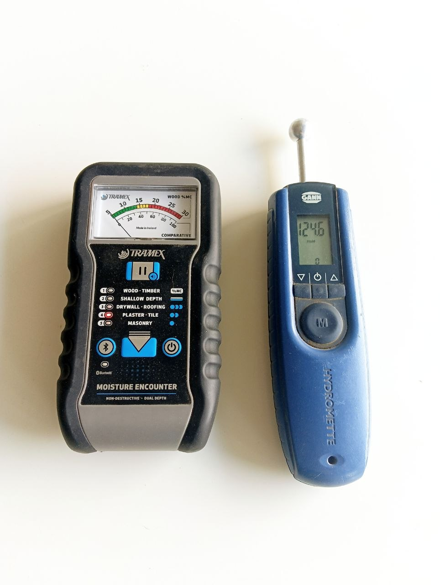

Nasz Equipment
We use the most modern diagnostic equipment available on the market.

Highly Sensitive Geophone Trubolab A-10T3
The electronic geophone comes into action at the stage of strict determination and precise location of the leak point. It hears the noise of water flowing from a damaged pipe.
After verifying the system with a manometer and preliminary identifying the location, it is the geophone (and tracer gas) that is used to indicate the exact spot of 10-20 cm where the tile or floor will ultimately be broken.

Tracer gas (H2/N2) and detector
The gas method is also a technology for direct and final, very precise location of the fault. Most often used for leaks that are "inaudible" to the geophone (very small leaks, heated installations in thick concrete).
The installation is filled with gas, and our highly sensitive detector tracks hydrogen particles that escape from the fault straight up through the building materials.

HD Thermal Camera
Thermal imaging cameras are used for preliminary assessment of the working area and non-invasive mapping of temperature distribution under the floor or inside walls.
They are perfectly suited for identifying the main zones where the problem occurs, especially in underfloor heating failures and hot water leaks. They help narrow down the search area before precise measurements.

Specialized UV Dye
We use UV fluorescent dyes to test the tightness of complex drainage systems, leaking waterproofing, terraces and flat roofs.
The introduced dyed water eventually penetrates through damaged areas of waterproofing or grout, and illuminating it with a UV flashlight flawlessly reveals the path taken by the water causing the leak.

Endoscopes and inspection cameras
An inspection camera acts as the "eyes" of the professional wherever there is no physical access: in shafts, bathtub enclosures, inside pipes or under hot tubs.
Live view allows inspecting suspicious areas for faulty joints, cracks, or sewage leaks, without the need to destroy drywall constructions.

Moisture meters (Gann and Tramex)
We use professional, non-invasive moisture meters from renowned brands (Gann and Tramex) to map the moisture levels in building materials.
They serve for a preliminary assessment of the flooded property. They help distinguish dry fragments from those saturated with water, allowing us to follow the "water trail" right to the probable source of the leak.

Manometry i kompresor
Pressure tests are the absolute basis and the first test we perform upon arrival. Using precise manometers and a compressor, we check the tightness of each installation separately.
This allows us to determine 100% clearly which pipeline has a leak: whether in the cold water, hot water (C.W.U.), or central heating (C.O.) system. It is a crucial stage of assessing the condition before we start accurate fault tracking.